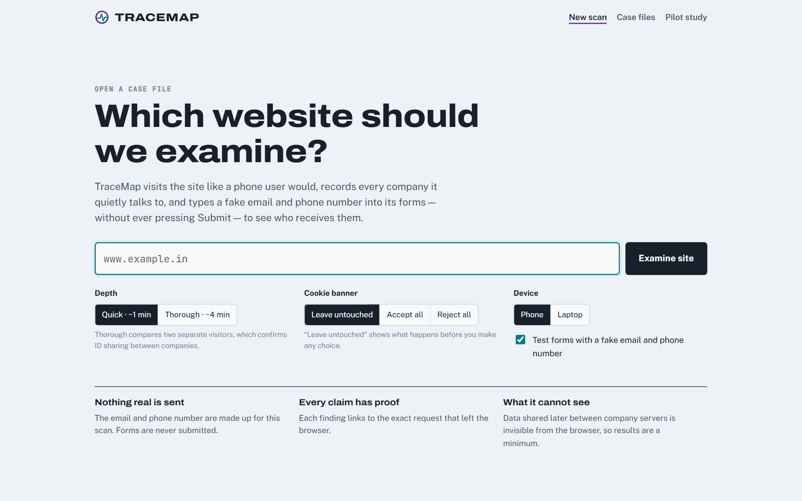
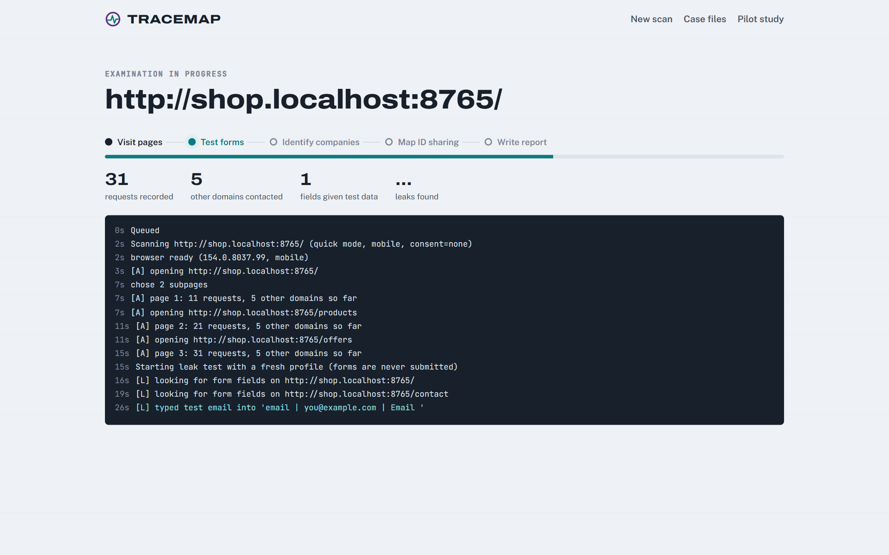
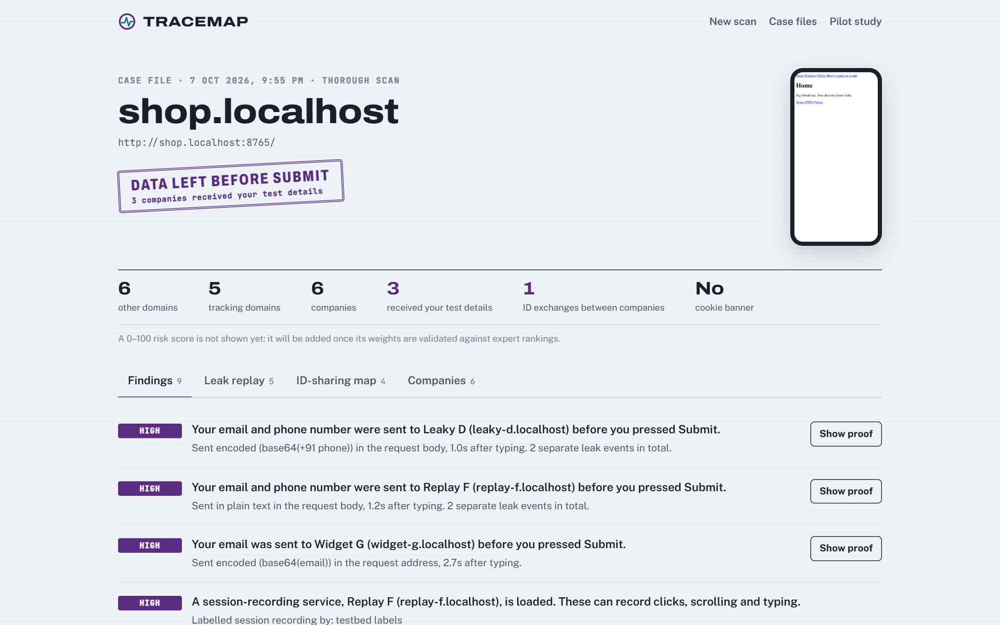
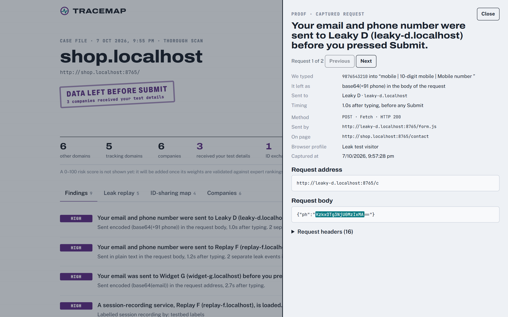
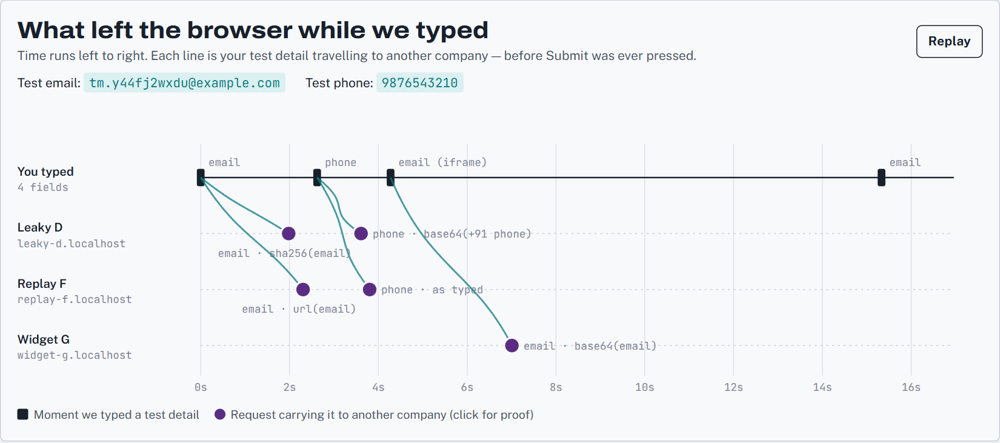
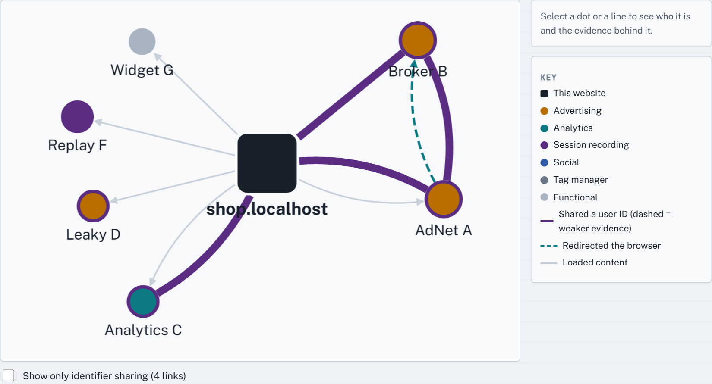
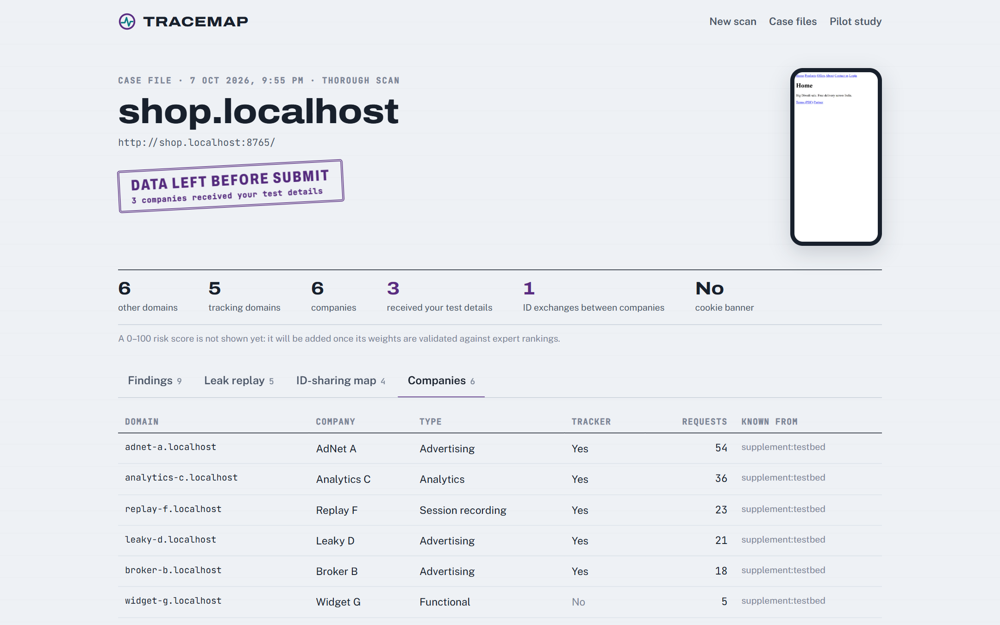
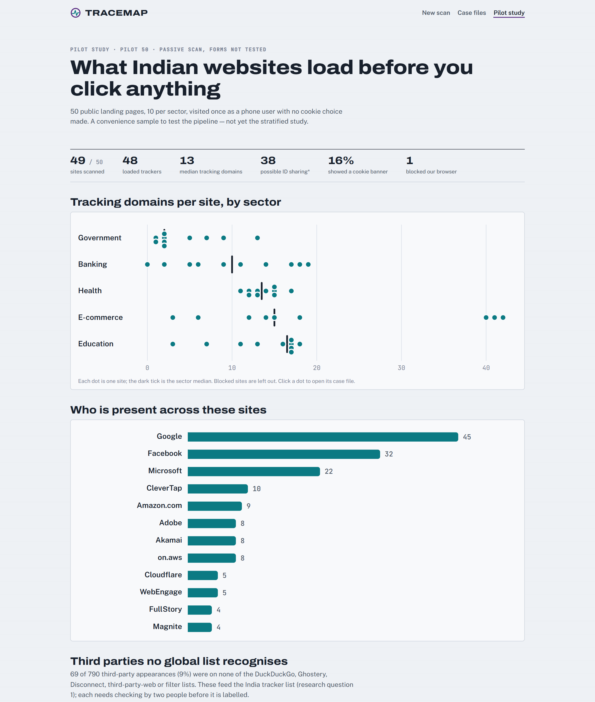
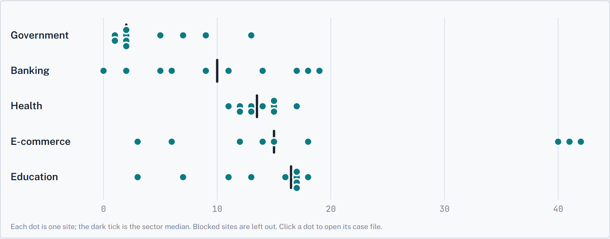

Team guide · mid-semester review
TraceMap Team Guide
What we built, every screen and number explained, where each number comes from, how sure we are of it, and what is left. Read sections 1, 4 and 6 before the review.
1. The project
What TraceMap is
When you open a website, your browser quietly talks to many other companies: ad networks, analytics firms, data brokers, session-recording services. Their scripts run inside the page, so they can see what you click and, in some cases, what you type into forms before you press Submit.
TraceMap opens a website the way a phone user would, records every company the page contacts, types a made-up email and phone number into its forms without ever submitting, and shows who received them. It also finds companies that pass the same user ID between them (cookie syncing). Every finding links to the exact network request that proves it.
Main goal. Use the tool to run the first sector-by-sector study of Indian websites (government, banking, health, e-commerce, education) that combines verified form leaks, identifier sharing and client-side security exposure, as a baseline taken before the DPDP Act's duties on websites apply (about May 2027).
The tool is the method. The study and the data it produces are the contribution.
Five research questions
Why now, why India
DPDP Act timing
The DPDP Rules were notified on 13 Nov 2025; core duties for websites apply from about May 2027. A careful measurement now is a "before" picture nobody can take later.
Script attacks are a compliance issue
PCI DSS 6.4.3 and 11.6.1 (mandatory since 31 Mar 2025) require payment pages to inventory and watch every script. The polyfill.io attack (2024) hit 100,000+ sites.
India is mobile-first
About 65% of Indian web traffic is mobile (StatCounter, Aug 2026), so TraceMap visits every site as a phone (Chrome on a Pixel 7 profile).
The global data has an India gap
DuckDuckGo's Tracker Radar crawls no Indian region, and major open lists miss Indian vendors such as MoEngage, Netcore and Razorpay.
Who would use it (real-world use cases)
| User | What TraceMap gives them | Why they need it |
|---|---|---|
| Online shops, payment pages, PCI assessors | A list of every script on a page, who loaded it, and (second half) a change alert when scripts change | PCI DSS 6.4.3 / 11.6.1 script inventory and tamper detection |
| Company privacy officers (DPOs) | A readiness report: trackers before consent, which companies receive data, form data leaving before submit | Preparing for DPDP duties before May 2027 |
| Journalists and civil society | Findings with proof: the exact request, time, and script, plus screenshots | The Markup's "Pixel Hunt" model, which led to US FTC actions |
| CERT-In empanelled auditors, bank IT audit | Third-party script exposure on public pages (second half: outdated libraries with known CVEs) | Third-party risk sections of audits |
| Researchers and list maintainers | An open dataset and an India tracker list | Better tracker coverage for Indian users |
What is new, honestly
Each technique has prior art. The Markup's Blacklight and the Leaky Forms study (USENIX Security 2022) type fake values into forms; cookie-sync studies (CCS 2014, CCS 2016, WWW 2019) detect ID swapping; Indian studies covered news sites (2021) and government cookies (2022). What nobody has done is combine verified form leaks, identifier sharing and supply-chain exposure across Indian sectors, with proof per finding, an India vendor list and +91 phone canaries. We say this openly; it is a stronger position than claiming to invent the techniques.
2. How it works
Six stages. Each is a separate module that reads and writes fixed data formats (tracemap/contracts.py), so stages 2 to 6 can be re-run on saved crawls without a browser (python -m tracemap analyze).
| Stage | What it does | How | Code | Owner |
|---|---|---|---|---|
| 1. Crawl | Opens the site as a phone, visits the landing page and 4 inner pages (2 in quick mode), records every request, cookie, stored value and sensitive browser API used | Playwright driving installed Chrome; Chrome DevTools Protocol for request origins and POST bodies; in-page hooks on about 80 browser APIs (list adapted from DuckDuckGo's open-source collector); DuckDuckGo autoconsent for cookie banners | tracemap/crawl/ | Kavya |
| 2. Detect | Names the company behind each domain, its type (ad, analytics, session recording...), and flags risky script behaviour | DuckDuckGo, Ghostery, Disconnect and third-party-web data (majority vote on type) + EasyPrivacy, EasyList, IndianList, AdGuard rules + our India list; behaviour rules from published fingerprinting research | tracemap/detect/ | Nityavardhan |
| 3. ID graph | Finds values that identify a person and the companies they reach | Two separate visitors (A, B) plus A's revisit (A2); rules from Englehardt and Narayanan (CCS 2016) | tracemap/collusion/ | Krati |
| 4. Leak test | Types a fake email and phone into forms, never submits, and searches all traffic for them | A fresh browser profile; ~48,000 precomputed hashed/encoded versions searched with an Aho-Corasick matcher; method from Englehardt et al. 2018 and Leaky Forms 2022, reimplemented | tracemap/leak/ | Kartik |
| 5. Findings | Turns evidence into plain-English sentences with severity and links to proof | Fixed reason codes (listed in section 3.4) | tracemap/findings.py | Krati / Kartik |
| 6. Measure | Runs many sites in a batch and summarises by sector | Resumable batch runner, one site at a time, per-site time limit | tracemap/measure/ | Krati + all |
The web app is a FastAPI server (live progress streamed to the browser) and a React interface. Everything runs on one laptop; scans are stored under var/.
3. Every screen explained
Each screen below has: what you see, where the data comes from, and how sure we are. Status labels used throughout:
3.1 New scan

What you see
- Website address: any public site. Private and local addresses are refused unless the server runs with
--allow-local(needed for our test site). - Depth: Quick = one visitor, landing page + 2 inner pages (~1 min). Thorough = visitors A, B and A's revisit, landing + 4 inner pages (~3-4 min). Only thorough scans can confirm ID sharing.
- Cookie banner: Leave untouched (what happens before any choice), Accept all, Reject all.
- Device: phone (default) or laptop.
- Test forms: runs the fake email/phone test.
Where it comes from
The options map one-to-one to the crawler settings (CrawlConfig). The three notes at the bottom ("Nothing real is sent", "Every claim has proof", "What it cannot see") are the project's ground rules.
Recent case files lists every stored scan; click one to open it. This also works offline, which is our demo backup.
3.2 Live progress

What you see
- Stage rail: Visit pages → Test forms → Identify companies → Map ID sharing → Write report.
- Counters: requests recorded; other domains contacted; form fields given test data; leaks found (shown when matching finishes).
- Log: each step with seconds since start.
[A],[B],[A2]are the visitors;[L]is the leak-test visitor. Teal lines are typing events.
Where it comes from
The scan runs in the background and streams events to the page (Server-Sent Events). The same events are saved to events.jsonl, so a finished scan can replay its log.
The progress bar is an estimate between fixed checkpoints, not an exact percentage.
3.3 Case file: verdict, numbers, screenshot

The verdict stamp (one of four)
- Data left before submit
- At least one other company received the fake email or phone. Shows how many companies.
- No leak seen
- Fields were filled, and the fake values were not seen in any request to another company.
- Forms not tested
- No email/phone field was found, or the form test was switched off.
- Blocked by site
- The site showed a bot-check page; results are incomplete.
The summary numbers (the ledger)
- other domains
- Distinct registrable domains (e.g.
google-analytics.com, not each subdomain) other than the site's own, that received at least one request in any visit. - tracking domains
- Of those, the ones classed as ad, analytics, social, session recording or fingerprinting by the source lists, or matched by a filter-list blocking rule.
- companies
- Distinct owners of the other domains (the domain itself when the owner is unknown).
- received your test details
- Distinct other domains that received the fake email or phone.
- ID exchanges between companies
- Links where the same user ID reached two different companies. In quick scans this reads "possible ID exchanges (unconfirmed)".
- cookie banner
- Whether DuckDuckGo autoconsent detected a consent pop-up for visitor A.
The phone image on the right is the screenshot we took of the landing page during the scan. The line about the 0–100 score is deliberate: we do not show a score until its weights are validated (second half).
3.4 Findings tab: every reason code
Findings are sorted by severity (High, Medium, Low, Note). Each has a plain-English title, a detail line, and a Show proof button when it is backed by specific requests.
| Code (internal) | Severity | Example title | How we detect it | Status |
|---|---|---|---|---|
LEAK_BEFORE_SUBMIT | High | Your email was sent to Leaky D before you pressed Submit. | The unique fake value (or one of ~48,000 hashed/encoded versions) appears in a request to another company after it was typed | Verified test site 5/5, 0 false |
SESSION_REPLAY | High | A session-recording service is loaded. | Any source list labels the domain "session replay" (e.g. FullStory, Hotjar) | From public lists capability, not observed recording |
FINGERPRINTING | Medium | Analytics C tried to fingerprint your device. | Script behaviour rules: drew text on a canvas and read it back; ran a silent audio test; read graphics-card IDs; probed fonts; WebRTC IP pattern | Partly verified test site 1/1 |
READS_FORM | Medium | A script read what you typed into a form. | Another company's script read input values while we typed (only during the leak test) | Partly verified test site 2/2 |
ID_SHARING | Medium | AdNet A and Broker B exchanged an identifier for you. | Thorough scan: value same for A and A2, different for B, seen at two different companies | Verified test site 1/1 |
ID_SHARING_POSSIBLE | Low | ... may have exchanged an identifier (unconfirmed). | Quick scan: an ID-like value seen at two companies, without the two-visitor check | Unconfirmed by design |
ID_SHARING_SAME_COMPANY | Note | 5 identifier links stayed within one company (Google, Twitter). | Both ends have the same owner (e.g. google.com and youtube.com) | From public lists ownership data |
FIRST_PARTY_ID_SHARED | Low | Your visitor ID on this site is shared with 3 other companies. | An ID stored by the site (cookie/storage) also reaches other companies | Verified test site |
TRACKERS_PRESENT | Medium/Low | 13 tracking domains from 4 companies loaded before you made any cookie choice. | Count of tracking domains (definition above); "before any choice" when the banner is left untouched | From public lists |
CNAME_CLOAKING | Medium | A tracker is disguised as part of this website. | A subdomain of the site is listed as an alias of a tracker (DuckDuckGo / AdGuard data) | Not yet no test case yet; full DNS check in second half |
NO_CONSENT_BANNER | Note | No cookie-consent banner was detected. | autoconsent found no known banner; custom banners can be missed | Partly verified |
NO_FORM_TESTED / NO_LEAK_SEEN | Note | The test email was not seen going to other companies. | Fields found and filled; no match in any request | Verified clean test site |
SCAN_BLOCKED | Note | The site showed a bot-check page. | Page title/text patterns (e.g. "Access Denied", "Just a moment"), challenge frames, 403/429/503 | Verified test site + AJIO checked by hand |
3.5 The proof drawer

What you see
- We typed: the fake value and the field it went into.
- It left as: the disguise (e.g.
sha256(email)) and where in the request (address, body, cookie, header). - Sent to, Timing (seconds after typing).
- Method, Sent by (the script responsible), On page, Browser profile, Captured at.
- The full request address and body with the match highlighted; request headers on demand.
Where it comes from
Straight from the stored crawl record: the request captured by Chrome's DevTools Protocol, including the script call stack that caused it. Nothing here is computed for display; it is the raw evidence.
This is the answer to "how do you know?". You can open the request, see the hash, and hash the fake email yourself to check.
3.6 Leak replay

How to read it
- Time runs left to right from the first keystroke.
- Top lane, black marks: the moments we typed a test detail (an "(iframe)" mark is a field inside an embedded widget).
- One lane per company that received something. Each violet dot is a request carrying our detail; the teal line connects it to the field it came from.
- Labels show what left and its disguise ("as typed" means no disguise). Click any dot for proof. Replay animates it.
- The table below lists every leak event.
Where it comes from
Typing times are recorded when TraceMap types; request times come from Chrome. Each leak is attributed to the latest field typed with that value before the request, preferring a field in the same frame that sent it. Repeated requests with the same disguise to the same company are shown once (the earliest).
Verified on the test site against the planted answers.
3.7 ID-sharing map

Shapes and colours
- Black square: the website. Dots: other domains, coloured by type (amber advertising, teal analytics, violet session recording, blue social, grey functional). A violet ring marks a tracker. Bigger dots have more links.
- Grey arrow: X's script or page loaded something from Y.
- Teal dashed arrow: X redirected the browser to Y (how IDs are often handed over).
- Violet line: the same user ID was seen at both. Thicker = more confident; dashed = under 60% (unconfirmed).
Confidence values
- 80%: confirmed by visitors A, B and A2 (90-95% if seen on several pages).
- 45%: stable for A, but B never sent that value, so no comparison.
- 30%: quick scan, single visitor.
These are transparent rules for now. In the second half they are replaced by a model trained on ~300 links labelled by hand, with a reliability check.
"Show only identifier sharing" hides the load arrows. Click a dot or line for details and proof.
3.8 Companies tab

Columns: Domain; Company (owner; "same company as the site" for a site's own CDN, e.g. flixcart.com for Flipkart); Type; Tracker; Requests; Known from, which lists recognised it. A domain known from no list is a candidate for our India list (RQ1). Owner comes from the first source that knows it (our India list, then DuckDuckGo, Ghostery, Disconnect, third-party-web); type is a majority vote across sources, except that any "session recording" label wins.
From public lists The India list entries are marked unverified until two of us check each vendor's own documentation.
3.9 Pilot study page

What you see
- Headline numbers for the 50-site pilot.
- Dot chart: one dot per site, its number of tracking domains; the dark tick is the sector median. Click a dot to open that site's case file.
- Company bars: on how many sites each company appeared as a tracker.
- Unlisted domains: third parties on no global list.
- Sector table and a full site table.
Where it comes from
Built on request from every stored pilot scan (tracemap/measure/report.py), so it updates after any re-analysis. "Possible ID sharing*" is starred because quick scans cannot confirm it.
4. Is it correct?
How we check each kind of claim, and where we stand. The short answer for the panel: everything the tool claims is checked against a test website with planted answers; real-site accuracy is measured in the second half.
The test website (our ground truth)
testbed/server.py runs a fake Indian shop on shop.localhost with six fake companies, each planting a known behaviour. The answers are written down in testbed/ground_truth.json, and automated tests compare TraceMap's output with them on every change.
| Planted | What it does | Found? |
|---|---|---|
| AdNet A | Stores a user ID, sends it in pixels, redirects to Broker B with the ID | Yes: tracker, ID link, redirect |
| Broker B | Receives AdNet A's ID through the redirect (cookie sync) | Yes: confirmed ID link, 80%+ |
| Analytics C | Canvas and audio fingerprinting, client ID cookie | Yes: both fingerprinting flags |
| Leaky D | Sends SHA-256 of the email on blur; base64 of the +91 phone in a POST body | Yes: both, with the right disguise |
| Replay F | Session recorder: posts typed values URL-encoded | Yes: email and phone |
| Widget G | Chat widget in an iframe: sends base64 of the email typed inside it | Yes: found the field inside the iframe |
| The shop itself | Sends the email to its own server | Correctly not counted as a leak |
| clean.localhost | No third parties at all | Zero findings |
| blocked.localhost | Bot-check page | Marked blocked |
Negative control: we search the same captured traffic for an email we never typed. It must give zero hits, and it does. This shows the matcher does not invent leaks.
Status of every number
| Claim / number | How it is produced | Evidence today | Status |
|---|---|---|---|
| Requests, domains contacted | Chrome DevTools Protocol events for every frame | Test site: all planted requests captured with their origin script | Verified |
| Third party vs the site's own | Registrable domain from the Public Suffix List (pinned snapshot) | Test site 6/6; unit tests on .co.in, .gov.in and .sbi domains | Verified |
| Company names and types | 4 public datasets + 4 filter lists + our India list | Spot checks (Google Analytics → Google/analytics; Hotjar → session recording; CleverTap, MoEngage resolved) | From public lists |
| India vendor labels | Team-written list (23 vendors) | Not yet checked against vendor docs | Not yet 2-coder check |
| Form leaks | Unique canary + 48k disguises | Test site 5/5, 0 wrong recipients, negative control 0 | Partly verified real sites wait for ethics |
| Fingerprinting flags | Published rules over browser API use | Test site 1/1 | Partly verified 200 hand-labelled scripts planned |
| Session recording | List labels | Known vendors (FullStory, Hotjar...) | From public lists capability only |
| Confirmed ID sharing | A/B/A2 rule | Test site: real IDs confirmed, timestamps and page names rejected | Partly verified 300 hand-labelled links planned |
| Cookie banner detected | DuckDuckGo autoconsent rules | 8 of 49 pilot sites; custom banners can be missed | Partly verified manual check planned |
| Bot-check detection | Title/text/frame/status patterns | Test site; AJIO "Access Denied" confirmed by hand | Verified |
| Pilot sector numbers | Quick passive scans of 50 sites | Convenience sample, one run, one connection | Indicative only |
| 0–100 risk score | Not shown | Needs expert-ranking validation | Not yet |
Limits we always state. TraceMap sees only what happens in the browser. Data shared later between company servers is invisible, so every number is a minimum. We only test public pages (no logins). An ID link is evidence of sharing, not proof of intent. Form tests on real sites have not been run yet; they wait for ethics approval.
5. Pilot results
50 well-known sites, 10 per sector, scanned on 7 Oct 2026 in quick passive mode: phone browser, landing page + 2 inner pages, no cookie choice made, no form typing. 49 completed; AJIO showed an "Access Denied" bot wall. This is a convenience sample to test the pipeline, not the study.

| Sector | Completed | Median tracking domains | Most | Cookie banner |
|---|---|---|---|---|
| Government | 10 / 10 | 2 | MyGov, 13 | 2 |
| Banking | 10 / 10 | 10 | HDFC Bank, 19 | 3 |
| Health | 10 / 10 | 13.5 | 17 | 1 |
| E-commerce | 9 / 10 | 15 | Croma, 42 | 2 |
| Education | 10 / 10 | 16.5 | 18 | 0 |
| All | 49 / 50 | 13 | Croma 42, Nykaa 41, Amazon India 40 | 8 |
48 of 49 sites
loaded at least one tracker before any cookie choice.
8 of 49 sites
load a known session-recording tool (FullStory, Hotjar, Crazy Egg, ContentSquare), including Axis Bank, Fortis Healthcare and Narayana Health. Capability, not observed recording.
19 of 49 sites
use Indian martech per our draft India list: CleverTap on 10, WebEngage 5, MoEngage 2, VWO 2, Colombia 2.
8.7%
of third-party appearances (69 of 790) are on no global list, e.g. bhashini.co.in, senseforth.com. Some are a site's own other domains; all need hand review.
Lessons the pilot taught us
- SBI moved. sbi.co.in now shows a notice that the site moved to
sbi.bank.in(the RBI.bank.inmigration). The study corpus must track new bank domains. Re-scanned at the new address. - A frozen page stalled the run (epfindia.gov.in). Every in-page step now has a time limit and each scan has an overall budget.
- Same-company ID links (Google ↔ YouTube) cluttered the findings; they are now grouped into one note.
- Quick scans can't confirm ID sharing, so the app now labels those links "possible".
- Median 23 seconds per site in quick mode, so the full 1,500-site study is a few days of running at a polite pace.
Full numbers: docs/pilot_results.md. Raw rows: var/pilot/pilot_50/results.csv.
6. Presenting to the panel
Three-minute talk track
0:00When you open a website, your browser quietly talks to many companies. Abroad, studies showed scripts sending your email to ad companies before you press Submit. Nobody has measured this for Indian sites, sector by sector.
0:30TraceMap opens a site like a phone user, records every company it contacts, types a fake email and phone number without submitting, and shows who received them, with the exact request as proof.
1:00Timing matters: the DPDP Rules were notified in November 2025, and duties apply from about May 2027. Our measurement now is a baseline that cannot be taken later.
1:20We tested it on a fake shop where we planted the answers: it finds all six companies, all five leaks, the cookie sync, and invents nothing (negative control).
1:50Pilot on 50 Indian sites: 48 of 49 load trackers before any choice; the typical page loads 13 tracking domains; 8 load session-recording tools, including a bank and two hospital groups; 19 use Indian martech that global lists under-cover.
2:30Next: real-site form tests after ethics approval, 1,500 sites sampled properly, security checks, a validated score. [Then the live demo.]
Demo steps
- Start the test website and the app (section 8). Open
http://127.0.0.1:8000. - Scan
http://shop.localhost:8765/, Thorough. Point at the live log and the teal "typed test email" lines. - While it runs (~2 min), open the stored test-shop case from Case files.
- Stamp and numbers → a High leak finding → Show proof: the SHA-256 hash highlighted.
- Leak replay → press Replay → click a dot.
- ID-sharing map → click the AdNet A to Broker B line → Show proof (the redirect carrying the ID).
- Pilot study page → the sector chart → click a bank's dot to open its case.
- Backup if the network fails: everything above opens from stored scans.
Questions to expect
Isn't this just Blacklight or Leaky Forms?
We build on both and cite them. Blacklight is a single-page tool for journalists; Leaky Forms studied EU/US top sites. Neither maps ID sharing or covers Indian sectors. Our contribution is the Indian sector study with proof per finding, +91 phone formats, and the India vendor list. In the second half we run Blacklight on 100 of our sites and report how well we agree.
How do you know a leak is real and not a coincidence?
The fake email is random and new for every scan, so finding it (or its hash) in a request cannot be a coincidence. Every leak links to the captured request. The negative control (searching for an email we never typed) gives zero hits.
How do you know a value is a user ID?
Two separate visitors plus a return visit: an ID is the same when visitor A comes back and different for visitor B. Timestamps and page names fail that test. The thresholds come from the 2016 Princeton million-site study.
Where is the machine learning?
Only where real labels exist, in the second half: a calibrated model for ID-link confidence (trained on ~300 hand-labelled links) and an explainable leak-risk model trained on canary-verified leaks. We deliberately do not train a "risk" model on labels we would invent.
Why is there no risk score?
A score is only meaningful once its weights are tested. We will show it with an uncertainty range, checked against rankings by three people, in the second half.
Is typing into bank forms ethical or legal?
We never submit, never type into password/OTP/card fields, and use only made-up values; submission is blocked in code. Real-site form tests have not run yet: they wait for the ethics committee. The pilot was passive (no typing).
What about tracking done server-side?
It is invisible from the browser, so we report every number as a minimum. That limit is stated in the app and the paper.
Why only 50 sites?
It is a pilot to test the pipeline and measure cost. The study uses ~1,500 sites sampled from the Chrome UX Report India list, stratified by sector and popularity, with proper statistics.
Who would actually use this?
Privacy officers preparing for DPDP, payment-page owners and PCI assessors (script inventory), journalists, auditors, and the tracker-list maintainers who would receive our India list.
What did you reuse?
DuckDuckGo's autoconsent (cookie banners) and their browser-API list, public tracker datasets, and published methods reimplemented from the papers. Everything is credited in NOTICE.md.
7. Done, to do, future
Done (first half)
- Crawler: phone emulation, visitors A/B/A2, landing + inner pages, request origins, POST bodies, cookies with who set them, storage, browser API hooks, cookie-banner modes, bot-wall detection, time limits
- Detection: 4 tracker datasets, 4 filter lists, India list v0 (23 vendors), behaviour flags
- Leak test: fake email/phone, iframe fields, no-submit guard, ~48k disguises, source-field attribution
- ID graph with two-visitor confirmation; same-company grouping
- Findings with reason codes and proof links
- Web app: scan + live progress, case file, proof drawer, leak replay, ID-sharing map, companies, pilot page
- Test website with ground truth; 44 automated tests
- 50-site pilot; threat model, ethics protocol, corpus plan; review deck
To do now (team actions)
- Submit the ethics protocol (
docs/ethics_protocol.md); get the legal-cell note on IT Act s.43/66 - Register a team email domain for canaries; set a team-owned phone number
- Two people verify every India-list vendor (set
verified: truewith a source link) - Review the 69 unlisted domains from the pilot
- Install Docker and test
docker compose up
Second half (planned)
- Research-grade ID graph: 300 hand-labelled links, calibrated confidence, communities tested against random networks and against company ownership
- Security checks: outdated JavaScript libraries (retire.js, OSV), integrity checks on login/payment pages, CSP (MDN HTTP Observatory), abandoned script domains, script-change alerts
- Full study: ~1,500 sites from CrUX India, 5 sectors, 200-site repeat runs, Blacklight comparison on 100 sites, real-site form tests after approval
- Validated score with uncertainty range; sector statistics (Kruskal–Wallis, effect sizes, regression on popularity)
- Evidence bundle download, sector dashboard, paper, dataset release, disclosures to sites and CERT-In
Future scope (beyond the project)
- A scheduled "watch" mode for site owners (alert when scripts change)
- A browser extension view for ordinary users
- Mobile apps (most Indian data flows through apps)
- A second measurement wave after May 2027 to compare before and after DPDP enforcement
- Other countries' sites for comparison
8. Running it
One-time setup (Windows, Python 3.11):
py -3.11 -m venv .venv .venv\Scripts\python -m pip install -e ".[dev]" .venv\Scripts\python -m playwright install chromium .venv\Scripts\python -m tracemap lists fetch cd frontend && npm install && npm run build
For the demo, two terminals:
.venv\Scripts\python -m testbed .venv\Scripts\python -m tracemap serve --allow-local
Other commands: python -m tracemap scan <url> --quick (command-line scan), python -m tracemap analyze (re-analyse stored scans), python -m tracemap pilot data/corpus/pilot_50.csv --quick --no-leak (batch), python -m pytest -q (tests).
| Folder | What is in it | Owner |
|---|---|---|
tracemap/crawl/, testbed/ | Crawler, browser hooks, cookie banners, test website | Kavya |
tracemap/detect/, data/lists/supplement/ | Tracker lists, owners, behaviour flags, India list | Nityavardhan |
tracemap/leak/, tracemap/api/, frontend/ | Leak test, server, web app | Kartik |
tracemap/collusion/, tracemap/measure/, findings.py | ID graph, pilot/study, findings | Krati |
docs/ | Threat model, ethics protocol, corpus plan, pilot results, this guide | All |
9. Glossary
- Third party
- Any domain other than the website's own registrable domain.
- Tracker
- A third party whose purpose is advertising, analytics, social tracking, session recording or fingerprinting, per public lists or blocking rules.
- Registrable domain (eTLD+1)
- The part of a hostname a company registers:
google-analytics.comforwww.google-analytics.com;sbi.co.inforwww.sbi.co.in. - Canary
- A unique fake value (email or phone) that, if seen elsewhere, proves where it went.
- Hash (SHA-256, MD5)
- A one-way fingerprint of a value. Ad platforms ask sites to send hashed emails so they can match people; a hash of your email still identifies you.
- Cookie syncing
- Companies passing a user ID between them (often through redirects) so they can join their profiles of you.
- Fingerprinting
- Identifying a device from its characteristics (how it draws text, its audio processing, graphics card) without cookies.
- Session recording
- A service that records clicks, scrolling and typing to replay a visit.
- Consent banner (CMP)
- The cookie pop-up asking you to accept or reject.
- Bot wall
- A page that blocks automated browsers ("Access Denied", "Just a moment").
- DPDP Act
- India's Digital Personal Data Protection Act 2023; Rules notified 13 Nov 2025.
- PCI DSS 6.4.3 / 11.6.1
- Card-industry rules requiring payment pages to inventory scripts and detect changes.